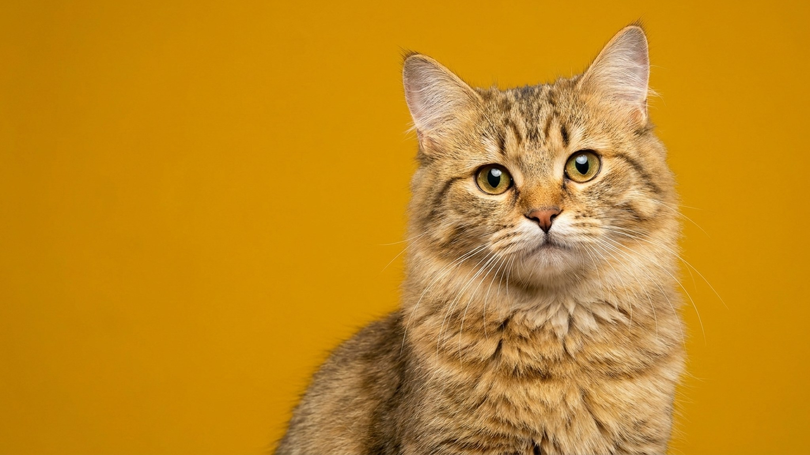

Кошка свернулась клубком, нос зажат между лапами, хвост обёрнут вокруг тела. Эта поза не случайная: за ней стоит несколько конкретных причин. Терморегуляция, ощущение безопасности и иногда сигнал о том, что в комнате некомфортно холодно. Разбираем, когда это норма и когда стоит посмотреть на градусник в квартире.
🐾 У вашей кошки так же?
Расскажите в AnimaLife, как ведёт себя ваш питомец, — приложение объяснит причину и даст пошаговый план. Бесплатно, без записи к специалисту.
Разобрать свой случай → Разобрать в MAX →
У вас iPhone? AnimaLife есть в App Store
Нос и уши у кошки покрыты тонкой кожей без густого шерстяного покрова. Через них тело теряет тепло быстрее всего. Поджав нос под лапу или прикрыв его хвостом, кошка буквально закрывает «форточку», через которую уходит тепло. Хвост при этом работает как шарф. Это рефлекторное поведение, унаследованное от диких предков, которые в холодную погоду сворачивались на отдых именно так, чтобы экономить энергию.
Поза с носом в лапах чаще всего появляется с началом отопительного сезона. Не потому что кошка мёрзнет в критическом смысле, а потому что оптимизирует теплообмен. Батареи включили, воздух стал суше и прохладнее у пола, кошка перестроила позу сна. Это норма.
Вторая причина не связана с холодом. Свёрнутая поза с прикрытым носом — базовое защитное положение. В природе спящее животное уязвимо, и компактная поза с прикрытыми мягкими частями снижает эту уязвимость. Кошки сохраняют этот инстинкт в полной мере, даже живя в безопасной городской квартире.
Если кошка часто выбирает такую позу, расслаблена, уши мягкие, дыхание ровное — она просто чувствует себя хорошо и спокойно. Тревожиться не о чем.
Есть несколько признаков, что кошка свернулась не ради уюта, а потому что ей действительно некомфортно.
Стоит замерить температуру в комнате на уровне пола — там, где кошка спит. Комфортный диапазон для большинства кошек 18–22°C. Ниже 18°C у пола, сквозняк из окна или щель под дверью — это уже про дискомфорт, а не про инстинкт.
Проверьте, нет ли сквозняка на любимом месте сна. Лежанка на полу у окна или двери — частая причина, о которой не думают. Переставьте её выше и подальше от источников холода. Тёплая лежанка с бортиком, которая не продувается снизу, часто решает вопрос полностью.
Если кошка кажется вялой, ест меньше обычного или предпочитает сидеть строго на батарее, а не просто любит тепло — это повод обсудить состояние с ветеринаром. Кошки умеют скрывать дискомфорт, и усиленный поиск тепла иногда сигнализирует не о температуре снаружи, а о самочувствии.
🐾 Хотите понять, что кошка говорит вам?
Опишите ситуацию или пришлите видео в AnimaLife — AI разберёт поведение вашего питомца и подскажет, что делать. Бесплатно, ответ за минуту.
Разобрать поведение → Разобрать в MAX →
У вас iPhone? AnimaLife есть в App Store
🐾 Понравился разбор?
Подпишитесь на канал — каждый день разбираем по одному тревожному симптому у кошек и собак: что в пределах нормы, а когда пора к врачу. Подпишитесь, чтобы не пропустить разбор, который может спасти здоровье вашего питомца.